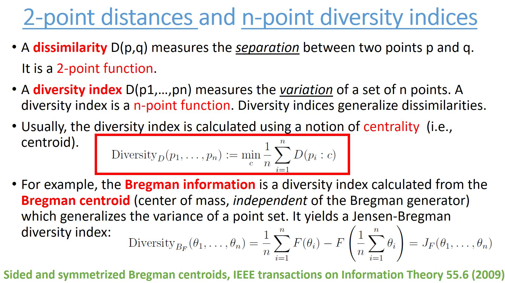
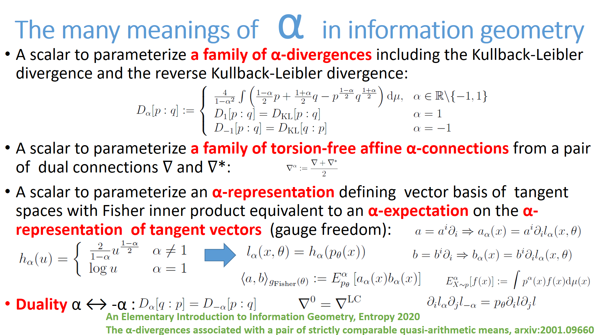
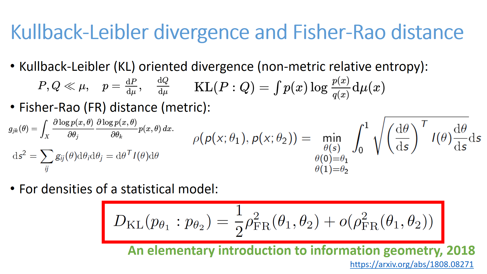

<h1>List of cards</h1>
 Click on a card and then browse previous/next card from that card.<BR>25 cards per page<BR>Card order is a random permutation.<ul><LI><A HREF="C:/Travail/WWWGitHubFrankNIELSEN/FrankNielsen.github.io/Cards/card-325.html" target="_blank"></HREF></LI>

<LI><A HREF="C:/Travail/WWWGitHubFrankNIELSEN/FrankNielsen.github.io/Cards/card-326.html" target="_blank"></HREF></LI>

<LI><A HREF="C:/Travail/WWWGitHubFrankNIELSEN/FrankNielsen.github.io/Cards/card-327.html" target="_blank"></HREF></LI>

<LI><A HREF="C:/Travail/WWWGitHubFrankNIELSEN/FrankNielsen.github.io/Cards/card-328.html" target="_blank"></HREF></LI>

<LI><A HREF="C:/Travail/WWWGitHubFrankNIELSEN/FrankNielsen.github.io/Cards/card-329.html" target="_blank"></HREF></LI>

<LI><A HREF="C:/Travail/WWWGitHubFrankNIELSEN/FrankNielsen.github.io/Cards/card-330.html" target="_blank"></HREF></LI>

<LI><A HREF="C:/Travail/WWWGitHubFrankNIELSEN/FrankNielsen.github.io/Cards/card-331.html" target="_blank"></HREF></LI>

<LI><A HREF="C:/Travail/WWWGitHubFrankNIELSEN/FrankNielsen.github.io/Cards/card-332.html" target="_blank"></HREF></LI>

<LI><A HREF="C:/Travail/WWWGitHubFrankNIELSEN/FrankNielsen.github.io/Cards/card-333.html" target="_blank"></HREF></LI>

<LI><A HREF="C:/Travail/WWWGitHubFrankNIELSEN/FrankNielsen.github.io/Cards/card-334.html" target="_blank"></HREF></LI>

<LI><A HREF="C:/Travail/WWWGitHubFrankNIELSEN/FrankNielsen.github.io/Cards/card-335.html" target="_blank"></HREF></LI>

<LI><A HREF="C:/Travail/WWWGitHubFrankNIELSEN/FrankNielsen.github.io/Cards/card-336.html" target="_blank"></HREF></LI>

<LI><A HREF="C:/Travail/WWWGitHubFrankNIELSEN/FrankNielsen.github.io/Cards/card-337.html" target="_blank"></HREF></LI>

<LI><A HREF="C:/Travail/WWWGitHubFrankNIELSEN/FrankNielsen.github.io/Cards/card-338.html" target="_blank"></HREF></LI>

<LI><A HREF="C:/Travail/WWWGitHubFrankNIELSEN/FrankNielsen.github.io/Cards/card-339.html" target="_blank"></HREF></LI>

<LI><A HREF="C:/Travail/WWWGitHubFrankNIELSEN/FrankNielsen.github.io/Cards/card-340.html" target="_blank"></HREF></LI>

<LI><A HREF="C:/Travail/WWWGitHubFrankNIELSEN/FrankNielsen.github.io/Cards/card-341.html" target="_blank"></HREF></LI>

<LI><A HREF="C:/Travail/WWWGitHubFrankNIELSEN/FrankNielsen.github.io/Cards/card-342.html" target="_blank"></HREF></LI>

<LI><A HREF="C:/Travail/WWWGitHubFrankNIELSEN/FrankNielsen.github.io/Cards/card-343.html" target="_blank"></HREF></LI>

<LI><A HREF="C:/Travail/WWWGitHubFrankNIELSEN/FrankNielsen.github.io/Cards/card-344.html" target="_blank"></HREF></LI>

<LI><A HREF="C:/Travail/WWWGitHubFrankNIELSEN/FrankNielsen.github.io/Cards/card-345.html" target="_blank"></HREF></LI>

<LI><A HREF="C:/Travail/WWWGitHubFrankNIELSEN/FrankNielsen.github.io/Cards/card-346.html" target="_blank"></HREF></LI>

<LI><A HREF="C:/Travail/WWWGitHubFrankNIELSEN/FrankNielsen.github.io/Cards/card-347.html" target="_blank"></HREF></LI>

<LI><A HREF="C:/Travail/WWWGitHubFrankNIELSEN/FrankNielsen.github.io/Cards/card-348.html" target="_blank"></HREF></LI>

<LI><A HREF="C:/Travail/WWWGitHubFrankNIELSEN/FrankNielsen.github.io/Cards/card-349.html" target="_blank"></HREF></LI>

</ul><BR> <A HREF="index13.html">Previous card page</A>&nbsp;&nbsp;&nbsp; <A HREF="index15.html">Next card page</A>
